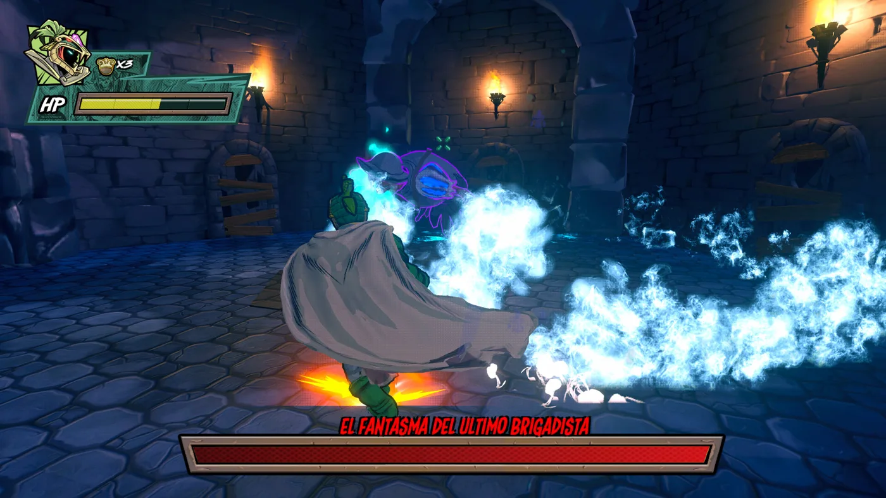
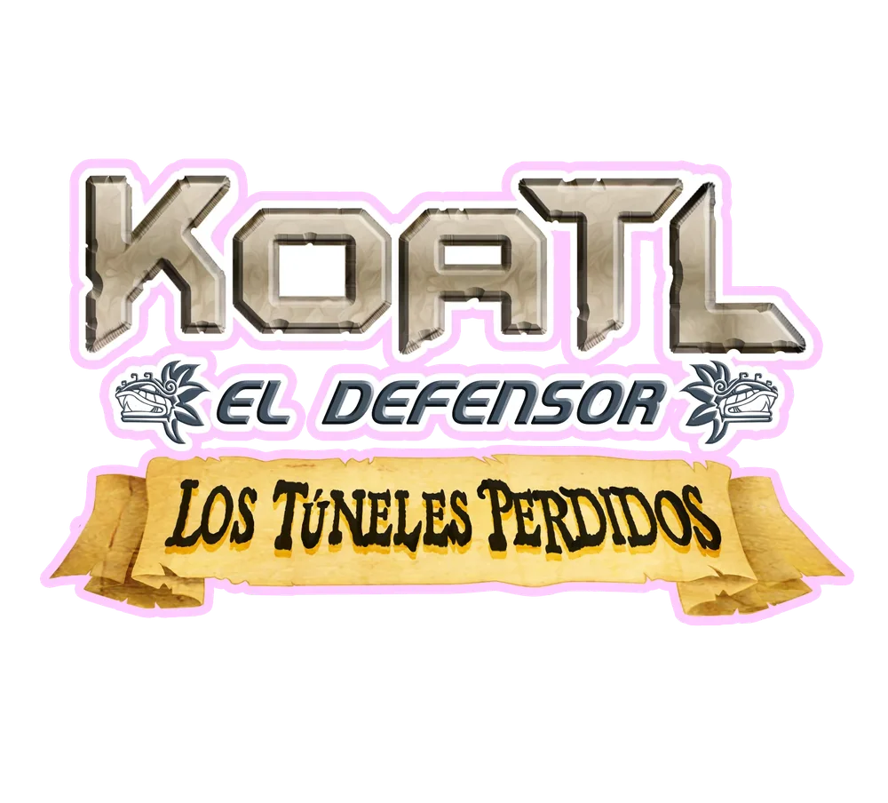
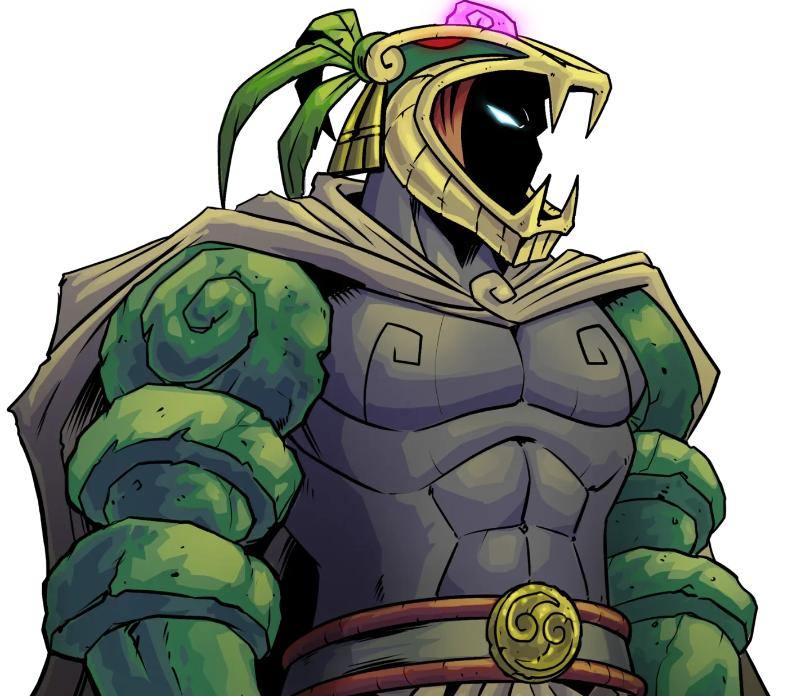
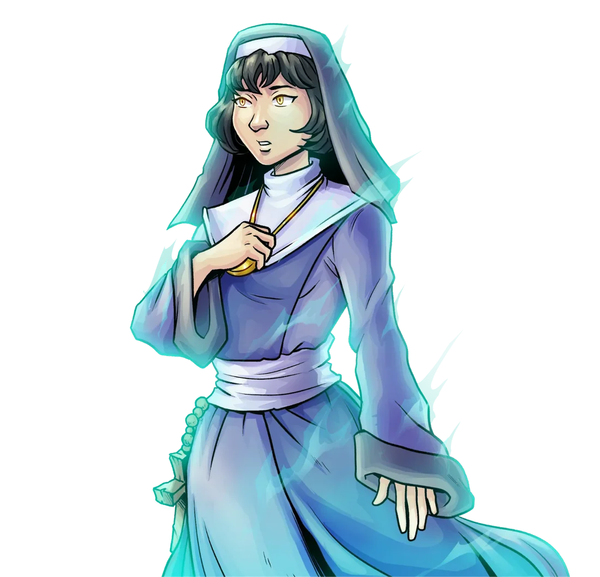
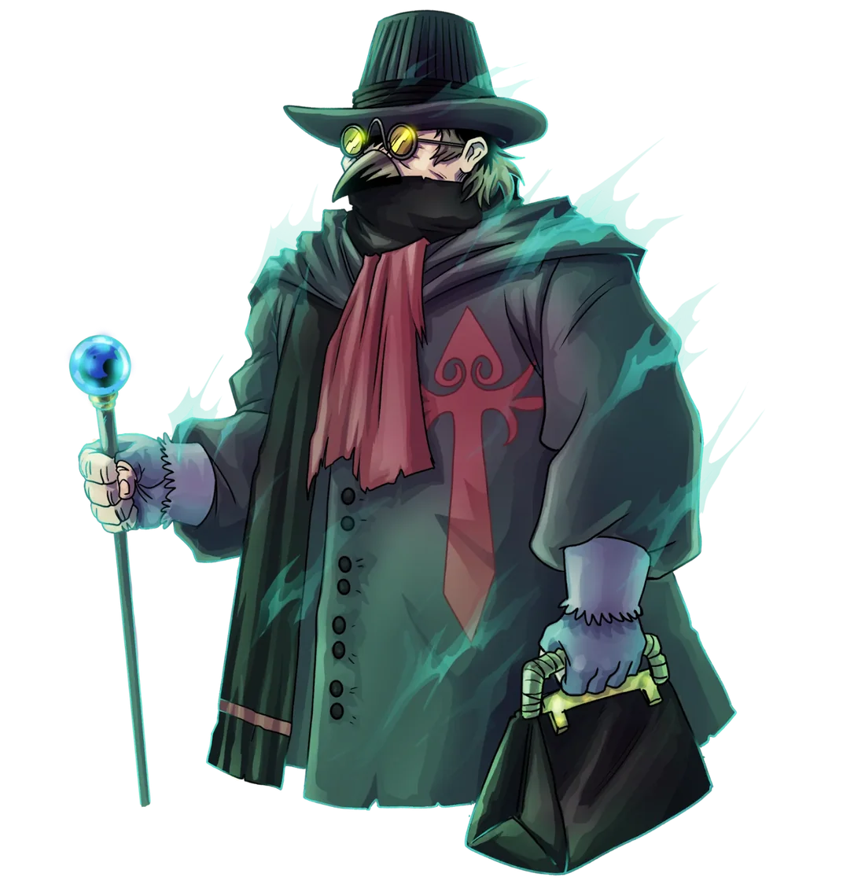
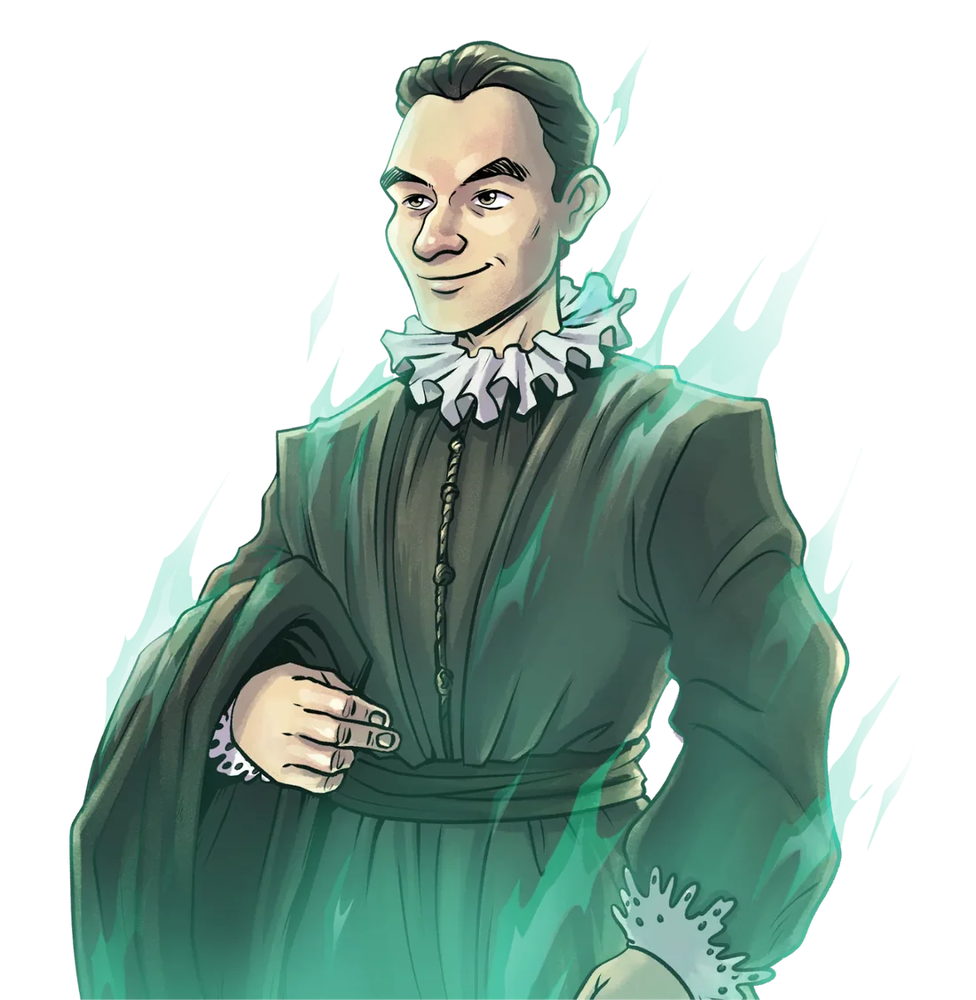
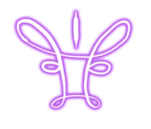
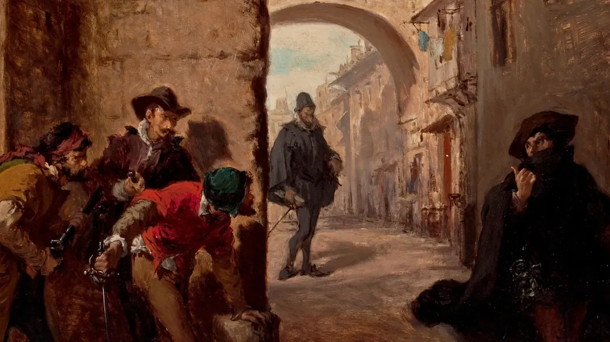
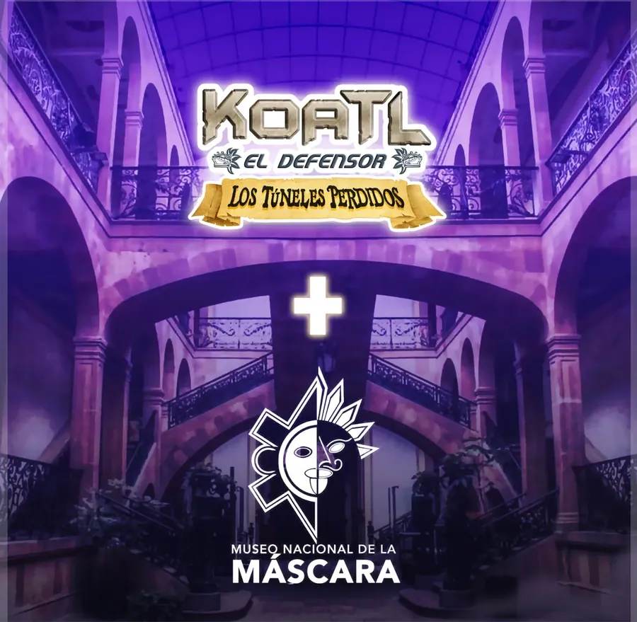

La nueva versión del videojuego de Koatl: una aventura de acción cinematográfica que combina plataformas en 2.5D con combate en 3D, en los túneles olvidados bajo San Luis Potosí.
Un laberinto de túneles olvidados guarda secretos enterrados durante siglos. Cuando una nueva amenaza despierta en las profundidades, Koatl desciende a lo desconocido para enfrentar una fuerza que pone en peligro el pasado y el presente.
Una historia original dentro del universo de Koatl, desarrollada por Seashell Studio, Yair Artz y Oribe Ware Games, y publicada por Seashell Studio. En el Steam Next Fest de junio de 2026 se estrenó una demo gratuita con el Túnel 1 completo y la batalla contra el primer jefe.
Dos perspectivas de juego
Plataformas en 2.5D que cambian a combate completamente en 3D contra los enemigos más poderosos.
Siete túneles
Cada túnel tiene desafíos propios, caminos ocultos y misterios. Las armas, inspiradas en el lore del cómic, abren nuevas formas de pelear y explorar.
Una historia que se cuenta en viñetas
Escenas narradas como cómic, voces de Carlos Segundo y Rubén Castro y un soundtrack original.

Jefes y Boss Rush
Batallas contra jefes que exigen estrategia y habilidad, y un modo Boss Rush con hasta cinco héroes, cada uno con su propio estilo.
7Túneles por explorar
5Héroes jugables en Boss Rush
11Idiomas de interfaz y subtítulos, con voces completas en español
2026Demo en el Steam Next Fest de junio
Más allá de la PC
Además de Steam, Seashell Studio prepara el lanzamiento en consolas Xbox y PlayStation. En 2026 el juego se presentó en convenciones como Rhinocon, en Querétaro.
Mínimo
Windows 10 de 64 bits, Intel i5 de 3.ª generación o Ryzen de 1.ª, 4 GB de RAM, GeForce serie 7 o Radeon R7, 5 GB de espacio (se recomienda SSD).
Recomendado
Windows 11 de 64 bits, Intel i5 de 7.ª generación o Ryzen de 3.ª, 8 GB de RAM, GeForce serie 10 o Radeon RX 400, 5 GB de espacio (se recomienda SSD).
ULTIMATE parte de Koatl el Defensor: Los Túneles Perdidos, lanzado en Steam el 15 de enero de 2023: el primer videojuego completado de un superhéroe mexicano.
Esa versión ya no está a la venta en Steam. Aquí sigue su historia: personajes, villanos, la misión con el Museo Nacional de la Máscara, el soundtrack, el doblaje y el equipo que lo hizo posible.

Descubre el misterio bajo San Luis Potosí
Un juego de plataformas y acción ambientado en el universo de Koatl el Defensor, desarrollado en alianza con el estudio mexicano Oribe Ware Games.
El título continúa las aventuras de Koatl con una historia completamente nueva. Recorre los túneles como un sidescroller clásico con plataformas en 2.5D y, cuando te enfrentes a los enemigos más poderosos, el juego cambia a un modo de combate completamente en 3D.
Es el primer videojuego completado de un superhéroe mexicano.
Armas
Encuentra un arma diferente en cada túnel. Cada una te da habilidades nuevas para seguir explorando y combatiendo.
Coleccionables
Tesoros robados hace siglos, cómics de Koatl y textos antiguos que te ayudan a resolver el misterio completo.
No estarás solo: un par de moradores de los túneles te ayudarán en tu aventura.

Koatl el Defensor
El héroe de raíces indígenas y protector de San Luis Potosí. Guiado por visiones y por la energía negativa acumulada en el subsuelo, explora laberintos, resuelve enigmas y enfrenta peligros sobrenaturales para descubrir la verdad detrás de la leyenda.

Evangeline Vierge de Fer
Una escribana de hace 300 años que perdió la memoria. Sólo ella puede ayudarte a resolver el misterio completo de los túneles perdidos.

Dr. Sitho Farabeuf
Un fantasma que compra y vende bienes. Sus objetos te serán de gran ayuda al explorar.

Lucca de la Torre
El alma en pena de un talentoso músico que deambula por los túneles. ¿Qué secretos oculta?

Los villanos: La Garduña
Una sociedad secreta criminal que, según algunas fuentes, operó en España desde mediados del siglo XV hasta el XIX.
Se le atribuyen robos, asesinatos y extorsiones, con una compleja jerarquía y rituales de iniciación. La integraban desde vagabundos hasta criminales expertos, pero sus rangos más altos eran frailes y monjes excomulgados por practicar la hechicería y las artes oscuras.

La Garduña en la Nueva España
Ya en la Nueva España, siempre oculta en las sombras, la orden escuchó rumores de un inmenso poder enterrado bajo las minas recién abiertas del Cerro de San Pedro. Cuando un evento inesperado desató fuerzas más allá de la comprensión humana, Manuel de Regil, infiltrado de la orden, avisó a su líder máximo: Josué de Mexía.
Movido por la ambición, Josué reunió a los miembros más ilustres de la secta y emprendió un viaje que cambiaría para siempre el destino de la hermandad. Con los siglos, su presencia se borró de la memoria colectiva. Si tan sólo supieran que La Garduña está muy cerca, en el lugar más olvidado, esperando despertar…
¡El Museo Nacional de la Máscara está bajo ataque!
Espectros malignos salieron de los túneles, entraron al museo y robaron las máscaras de sus galerías en busca de energía mística.
Koatl recibe una llamada de emergencia y decide investigar. Ahora te toca devolver las máscaras a su lugar. Hicimos equipo con el Museo Nacional de la Máscara para crear una misión especial dentro del juego: al recuperarlas podrás visitar la sala Potosí y aprender sobre su origen.

Máscaras en exhibición dentro del juegoEl mapa del museoKoatl conversa con el guía del museoLa sala Potosí
Survive-All y Boss Rush
Tu aventura no termina con el modo historia. Al terminar el juego por primera vez se desbloquean dos modos nuevos.
Survive-All te lanza a una avalancha interminable de enemigos que aparecen cada dos segundos. Cada 50 enemigos derrotados las reglas cambian y se vuelven más peligrosas. Atento a lo que sueltan: curas pequeñas y grandes, recarga de resistencia y el poderoso Xiuhcóatl, que destruye a todos los enemigos del escenario.
Boss Rush te enfrenta a nueve jefes seguidos, eligiendo armas y curas de vez en cuando. ¿Podrás vencerlos con una sola vida?
Si reúnes todos los Evangeline Scrolls de la aventura también podrás jugar como ella en ambos modos, y hay más personajes por desbloquear.
Una de las mayores sorpresas de la producción fue contar con un elenco excepcional para dar voz a mis personajes.
El momento más emocionante fue la llegada del maestro Carlos Segundo, la voz de Piccolo en Dragon Ball, Woody en Toy Story y Snape en Harry Potter. Con su trayectoria y su voz inconfundible elevó todavía más el universo de Koatl. Cada actor y actriz aportó una energía y una pasión inigualables, y este juego es también un homenaje a ese talento.
Rubén Castro: Koatl el Defensor y Julián TennekCarlos Segundo: fray Josué de MexíaValeria Velasco: Evangeline Vierge de FerEros Mancebo: los inquisidores
Oribe Ware Games es un estudio independiente de Pachuca, Hidalgo, fundado por Gustavo y Benjamín Oribe Mendieta.
Lleva más de ocho años desarrollando videojuegos y tiene varios títulos publicados: IA Fighter, Tzompantli Arena, Combate Monero, Mostroscopy y Koatl el Defensor: Los Túneles Perdidos, que desarrolló por completo junto con Yair Artz (Codex Studio). En Koatl The Defender ULTIMATE se suma Seashell Studio, que también lo publica.
Koatl el Defensor: Los Túneles Perdidos fue desarrollado por Oribe Ware Games en asociación con Codex Studio. Koatl el Defensor es propiedad de Eduardo Yair Pérez Trujillo y se utiliza con autorización del autor.
¿Tienes un personaje esperando salir del papel?
Cotizo ilustración, diseño de personajes y mascotas, cómic por encargo, conferencias y talleres. Escríbeme y te respondo con una propuesta.